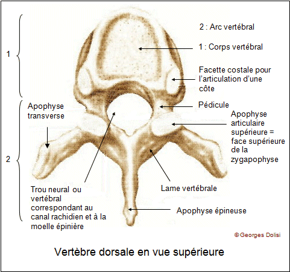
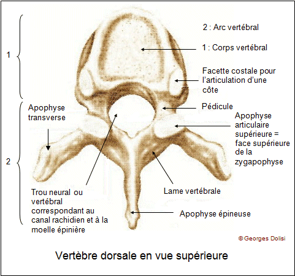
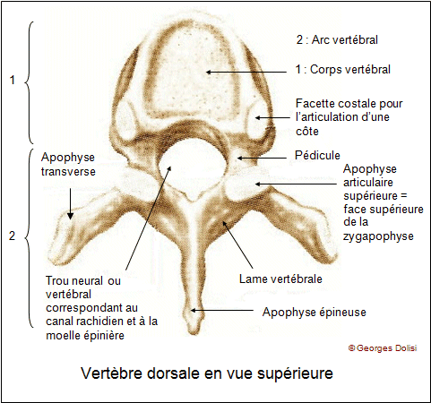
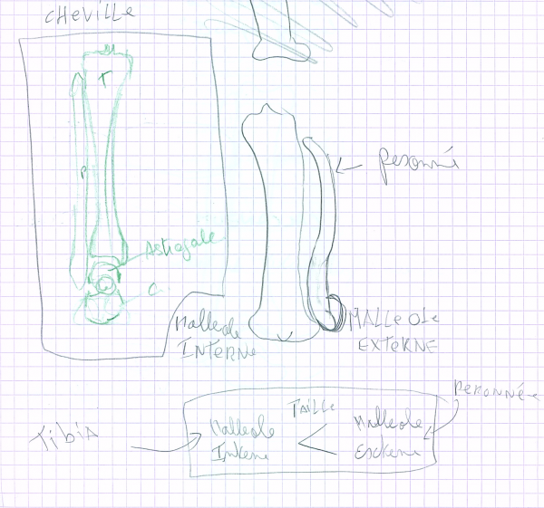
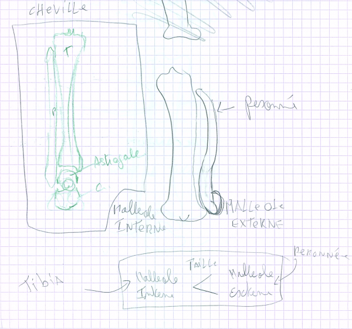

![[ANA JDG] Asterix and the Great Rescue - Megadrive](../vi/6oUXi0ckLmA/default.jpg)
![[ Présentation pour la chaîne Grenier des Joueurs ] JDG Prod](../art/SHAR.6419.583.2.jpg)


Voici mes notes:
![[Aide Anatomie]La colonne vertébrale!](../5252/79895252/pics/3307560998_1_3_QjzC8i7t.png)
Voici en bien plus propre:
![[Aide Anatomie]La colonne vertébrale!](../5252/79895252/pics/3307560998_1_7_UoZFwKx9.jpg) 
![[Aide Anatomie]La colonne vertébrale!](../5252/79895252/pics/3307560998_1_5_SpmX1k8l.png)
Retour au blog de KidpaddleetcieGlin
![[Aide Anatomie]Le dos,le coté et l'intérieur du corps humain!](../5252/79895252/pics/3307560888_1_3_1jyMDmK9.png)
![[Aide Anatomie]La cuisse, la jambe et le pied!](../5252/79895252/pics/3307559020_1_7_wgl0yqy1.png)
![[Aide Anatomie]La cuisse, la jambe et le pied!](../5252/79895252/pics/3307559020_1_9_jG9YWOER.png) 
![[Aide Anatomie]Les muscles et os de la tête](../5252/79895252/pics/3286090762_1_7_Ey7kv8rT.jpg)
![[Aide Anatomie]Les muscles et os de la tête](../5252/79895252/pics/3286090762_1_9_8YnSeY8i.jpg)
![[Aide Anatomie]Les muscles et os de la tête](../5252/79895252/pics/3286090762_1_3_Z5VLZ21T.png)
![[Aide Anatomie]Les muscles et os de la tête](../5252/79895252/pics/3286090762_1_5_pvwF2ltx.jpg)

January17 Head Study: Skull - 3D model by Hammer (@jackhammer)
The bones of the human head - Head Study part 1/2 As part of a personal project to study a body part each month, January has been the month of the head so I have been learning the bones of the skull as well as the muscles. With January coming to an end it was time for me to take what I learnt and create the skull in order to really understand the mass and form. Facial Muscles to come in the next few days. - January17 Head Study: Skull - 3D model by Hammer (@jackhammer)
via : sketchfab.com

January17 Head Study: Muscles - 3D model by Hammer (@jackhammer)
The muscles of the human head - Head Study part 2/2 I’ve found that there seems to be a variety of what anatomical books suggest as being important to show. So I bit the bullet and have featured muscles that appeared only in my Artists guide to Classic Human Anatomy. These are the muscles that are most likely to impact someone drawing the face :) - January17 Head Study: Muscles - 3D model by Hammer (@jackhammer)
via : sketchfab.com
![[Aide Anatomie]Les muscles et os de l'abdomen et du dos](../5252/79895252/pics/3286089676_1_8_P0mFfjyy.jpg)

Ecorche - Anatomy Human Male Musculature - Buy Royalty Free 3D model by Anderson Barges (@evilschool)
This model is featured in the official Sketchfab VR app: Male Musculature for study and reference. - Ecorche - Anatomy Human Male Musculature - Buy Royalty Free 3D model by Anderson Barges (@evilschool)
via : sketchfab.com
Avertissement : le contenu qui va s'afficher dans ce cadre n'est pas hébergé par skyrock mais provient de sketchfab.com. Ne saisis jamais d'informations personnelles (identité, mot de passe...).
![[Aide Anatomie]Les 3 genres de muscles](../5252/79895252/pics/3284238854_1_4_JEcnzKsb.jpg)
![[Aide Anatomie]Les muscles du bras](../5252/79895252/pics/3284237962_1_3_pSOB1PFi.gif)
![[Aide Anatomie]Les muscles du bras](../5252/79895252/pics/3284237962_1_11_AtVeBLZZ.gif)
![[Aide Anatomie]Les os du bras!](../5252/79895252/pics/3283587000_1_8_SybSxUlA.gif)
![[Aide Anatomie]Les os du bras!](../5252/79895252/pics/3283587000_1_6_S1G06goN.jpg)
![[Aide Anatomie]Les os du bras!](../5252/79895252/pics/3283587000_1_10_7pZA7SSX.jpg)
![[Aide Anatomie]Les os du bras!](../5252/79895252/pics/3283587000_1_12_F67986LU.png)
![[Aide Anatomie]Notions de construction des bras et des jambes.](../5252/79895252/pics/3283586154_1_12_3hPyudcX.jpg)
![[Aide Anatomie]Notions de construction des bras et des jambes.](../5252/79895252/pics/3283586154_1_14_hXGZkovQ.gif)
![[Aide Anatomie]Notions de construction des bras et des jambes.](../5252/79895252/pics/3283586154_1_18_YGJeUf8x.jpg)
![[Aide Anatomie]Notions de construction des bras et des jambes.](../5252/79895252/pics/3283586154_1_20_T82yxgQr.jpg)
![[Aide Anatomie]Notions de construction des bras et des jambes.](../5252/79895252/pics/3283586154_1_24_mRq0NA7i.jpg)
Partage